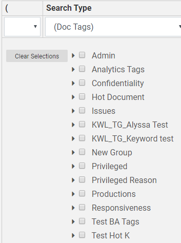
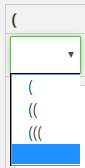
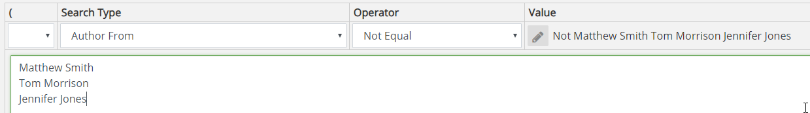
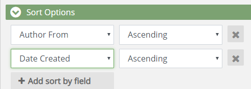

and click
and click  to collapse it. For a quick overview, see
to collapse it. For a quick overview, see In
On the Advanced Search tab, under Search Criteria, areas
can be expanded as required to define the search and/or search options. Expand each area by clicking and click to collapse it. For a quick overview, see
Several default search assumptions apply to both Advanced and Visual Search. For more information, see
Navigate to the Advanced Search window. See
If a previously defined search is already displayed on the dashboard, click Clear at the top of the Advanced Search case view. The title for the search changes to Untitled.
Begin building the advanced search by expanding any of the required sections on the Advanced Search page and creating your search criteria.
The following steps are methods for modifying the scope of your search. You can complete one or all, depending on how focused you would like the search to be. The steps are listed in one common workflow scenario. However, you can complete them in whatever order you like.
After you have added all your criteria to the search definition, run the search by selecting  . To save your search click Save, or Save As.For more information about saving searches, see
. To save your search click Save, or Save As.For more information about saving searches, see

|
|
Note: Adding criteria does not automatically run the search. When ready to run the search, click the Search button at the top-right corner of the screen. |
Users with appropriate permissions can view a Timeline showing dates for the documents in the case or selected set of documents (such as a batch, folder, or search results). The Timeline provides a simple way to filter the current document set based on a date range.
The dates presented in the Timeline example are based on the DOCUMENTDATE field. This field is populated with the dates in your case, such as calendar/email dates (Appointment Start Time, Sent Date, Date Created, Date Modified fields) and/or document dates (Date Created, Date Modified fields).

The ability to view and use the Timeline is governed by a specific permission. In addition, field permissions are taken into account for Timeline display purposes, such that users who do not have access to a particular Date or DateTime field specified for the Timeline are unable to see the field's data in the Timeline. Contact your administrator if you have any questions about your ability to view and use the Timeline.
The Timeline initially depicts all dates found in the selected document set, from the earliest to the latest.
The graph is a general representation of the number of documents found for each date. If your case has a very large date span (for example, 10 years or more), the Timeline graph may not be visible initially. Use the procedures in this topic to change the date range for the Timeline.
The details provided along the X axis (bottom) of the Timeline vary depending on the size of the date range—from years for large ranges to hours for small ranges.
To change the date range by entering or selecting the dates of interest:
The search Field drop-down menu and Filter Dates fields are at the top of the Timeline. The left field is the starting date and the right field is the ending date. Either enter or select the required dates in these fields.

To enter dates, use the format MM/DD/YYYY.
To select a date from a calendar, click the calendar icon and the date of interest. Use the arrow buttons in the calendar heading to scroll backward or forward one month at a time.
 .
.Optional: Select the Include Empty and Invalid dates option to include into the document set documents that contain date problems. This option affects only the documents listed in the case table; it does not affect the Timeline.
The Timeline changes to show only the details in the selected range, and the case table lists only the documents that contain dates within the range.
The Timeline’s start/end dates match the actual starting and ending dates of the range, if the dates differ from the dates you entered.
Instead of (or in addition to) entering/selecting dates, you can drag in the Timeline as follows:
Point to the Timeline in the general area you want to select, and click and hold the left mouse button.
Drag right or left as required to define the range of interest. When you stop dragging (release the mouse button), the selected range will be shown as a bar in the Timeline, for example:

If the range is incorrect, you can change the start and end dates in the search Field drop-down menu and Filter Dates fields above the Timeline. Or, you can click and drag again to further narrow the date range.

Optional: Select the Include Empty & Invalid Dates option to include into the document set documents that contain date problems. This option affects only the documents listed in the case table; it does not affect the Timeline.
The Timeline changes to show only the details in the selected range, and the case table lists only the documents that contain dates within the range.
After the Timeline is modified, it can be reset to
match the original (entire) document set—simply click .
|
|
Note: When you change dates
in the Timeline section
of Advanced Search, all subsequent search criteria entered will pull only documents from the selected date range. You may click |
A concept search returns documents that contain information that is conceptually similar to your search query, that is, it looks for ideas rather than specific terms or phrases.
For a quick overview of how to create an analytic search, click the video below.
For a concept search to be effective:
The search phrase should be written in a natural style comparable to the style of the documents being searched. For example, if the style of most case documents is appropriate for entry-level non-technical employees, then the query should not be written at a level appropriate for advanced IT professionals.
The search phrase should include text that will adequately describe the concept(s) of interest. A sentence, paragraph, or even the contents of an entire document may be entered. Entering one or just a few words is not as likely to return the most relevant results.
The search phrase should focus on only the concepts of interest.
Effective concept searching often requires that you conduct multiple searches, and then analyze the results and adjust your search entry accordingly.
|
|
Note: An analytic index must be configured before you can run a concept search. |
To define a concept search:
Complete the Analytics section of the Advanced Search tab as described in the following table.
|
component |
Description |
|
Concept |
Enter your query into the Concept field. The query can be any size, but a more fully described concept will usually yield better results than just one or two terms. |
|
Minimum Similarity |
Select a relevancy threshold to be used for the search. The threshold expands or narrows the evaluation for conceptually matching documents. Note:
|
|
Analytics Index |
Select the search index that has been defined for the concept of interest. Your administrator must configure concept search indexes. Contact your administrator for details about your concept search indexes. |
Type in your Concept.
Click the down arrow to select the Minimum Similarity. This number can be changed as you run the search to manipulate the search results.
Click the down arrow to select your Analytic Index.
When finished, click  ,or
,or  . For more information, see
. For more information, see
To define a text search, perform the following steps. The following figure shows a typical text search.

As required, select one or more search options from the Search Features list, as described in the following table.
|
|
Note:
|
|
Component |
Description |
|
Stemming |
Search for terms and all words beginning with the root form of the word entered. For example, searching for operation with this option selected will return documents containing operation, operate, and operator. (The root form of operation is considered operat.) |
|
Phonic |
Search for terms that sound similar but are spelled differently. For example, searching for smith with this option selected will return documents containing smith, smithe, and smythe. |
|
Fuzzy |
Search for terms that are not quite an exact match but are close. Useful for searching text fields in which some characters may not have been interpreted correctly by an OCR engine. Select a number from 0 to 9 to specify the degree of fuzziness that will be accepted. Values from 1 to 3 represent moderate levels of error tolerance and are used most often. Higher numbers result in a higher error tolerance (more results). Fuzzy search results may vary, depending on such factors as the length of the search term and/or position of incorrect characters. |
|
Synonyms |
Search term(s) that have the same meaning as the word that you enter, such as the words legal and authorized. Synonyms are defined by the WordNet® concept network. For details about WordNet, see http://wordnet.princeton.edu/. |
|
Related Words |
Search for the term you enter and related terms as defined by the WordNet concept network. For example, words may be related by being a subset of the search term (such as furniture and chair). WordNet considers many types of relationships, as discussed on their Web site. |
Enter any full-text search term or phrase in
the Keyword field. Use
the syntax explained in

Continue defining the advanced search by selecting additional criteria.
When finished, click , or . For more information, see
You can limit a search to a specific field and/or perform any of several specialty searches (such as a search for specific tags or redactions).
For an overview of field searching, click the video below.
Construct the search statement as follows:
Select the required Search Type from the list—either a field name or one of the special search types.
|
|
Tips:
|
Below the search statement line, select or enter required search details, which vary depending on the type of search. For example, for a (Doc Tags) search, select the document tag(s) for which you want to search. To clear the list, click Clear Selections.

|
|
Note: To ensure a correct search statement, select from options below the search statement line—do not type in the Value field. |
Select the required Operator. Operators vary depending on the Search Type chosen. They are presented in plain language for easy understanding. Operator choices are listed in the following table.
|
operator |
Description |
||
|
Any of These |
The selected field contains any of the selected field entries. For example, if the field is Custodian and 5 custodian names are checked, documents associated with any of the custodians will be included in the search results. |
||
|
None of These |
The selected field contains none of the selected field entries. For example, if the field is Custodian and 5 custodian names are checked, only documents not associated with any of the custodians will be included in the search results. |
||
|
All of These |
The selected field contains all of the selected field entries. For example, if the field is Custodian and 5 custodian names are checked, only documents associated with all of the custodians will be included in the search results. |
||
|
Not All of These |
The selected field does not contain the combination of selected field entries. For example, if the field is Custodian and 5 custodian names are checked, only documents that are associated with all of the custodians will be excluded in the search results. |
||
|
Is Not Empty |
The selected field is not empty. For example, if the Coding Date field set to Is Not Empty only documents that have a Coding Date defined will be included in the search results. |
||
|
Is Empty |
The selected field is empty. For example, if the Coding Date field set to Is Empty only documents that do not have a Coding Date defined will be included in the search results. |
||
|
Contains |
The selected field contains the search term/phrase (other content may also exist).
|
||
|
Does Not Contain |
The selected field does not contain the search term/phrase (other content may exist).
|
||
|
Equal |
The field content matches exactly the search/term phrase. |
||
|
Not Equal |
The field content does not exactly match the search/term phrase. |
||
|
Set |
The field is not empty; content exists in the field. |
||
|
Not Set |
The field is empty; no content exists in the field. |
||
|
Is Less Than |
Field content is less than the specified value. For numeric or date fields, this refers to numbers/dates; for text-related fields it refers to the letters of the modern English alphabet (a - z). |
||
|
Is Greater Than |
Field content is greater than the specified value. For numeric or date fields, this refers to numbers/dates; for text-related fields it refers to the letters of the modern English alphabet (a - z). |
Enter or select the content/item(s) to be searched. For example, for a field search, enter the search text. For a document tag search, select the tag(s) of interest.
To include another search statement in this area, select the required connector (And, Or, Not) on the right side of the statement, then click and go to the next step.
When all statements are added, collapse all details and review your search.
|
|
Note: To make changes, do not change a search type for a completed line. To change a search type, delete the incorrect line and add a new line with the needed search type. You can change the operator or values for a completed line if needed. To change the value, expand the line as shown in the previous steps. To remove individual lines, click next to an unneeded or incorrect statement. To remove all search criteria and start over, click the Clear Search button at the top of the Advanced Search page. |
If two or more statements should be grouped
into an expression you need to use parentheses, see
Click the left parenthesis, (, next to the start of the combined expression. Nested expressions can be created by selecting (( or (((.

Locate the end of the combined expression and select the right parenthesis, next to it. The options are ) or )) or ))) for nested expressions. The following example shows a search expression that will find certain tags OR redactions AND include “Stefan” in the Email From field.

After the field and/or special search is defined,
complete your advanced search definition as needed. When finished, click ,or . For more information, see
The following procedure allows you to save time when searching for different values for a specific field or for specific batches. For example, you may need to find five specific names in a Custodian field (or all custodians except for those five). Instead of creating a separate search statement for each name, you can enter all names in one statement. This type of search statement automatically uses the OR connector.
To define a multi-entry search statement:
Select the required search item (see the previous table) and an operator of Equal or Not Equal.
In the entry area, type (or paste) the required list of search items (up to 10,000), with one term on each line and a hard return between lines. The following figure shows a search for custodians that are not equal to a particular set of names.

After the field and/or special search is defined,
complete your advanced search definition as needed. When finished, click , or . For more information, see
Search results can be organized based by field content (the columns in the case table). Up to three fields can be defined for sorting. When you sort based on multiple fields, the order of the sorting is based on the order in which the fields are selected.
To specify sort order:
Click  Add sort by field.
Add sort by field.
Select the first field to be sorted. This is the primary order for the search results.
Select the sort order—Ascending (lowest to highest) or Descending (highest to lowest).
To specify a second or third sort order, click Add sort by field. Repeat the previous steps for the second and/or third field.
In the following example, search results will be sorted first by author name and then by date created.

To remove one of the sort-definition rows, point to the right side of the row and click .
Continue defining the advanced search by selecting additional criteria. When finished, click , or . For more information, see
When you define an Advanced Search, you can add random sampling to the search. When Random Sampling is used the search returns a random sample of documents instead of all documents meeting your search criteria. To add random sampling, complete the following steps:

|
|
Note: If using random sampling, do not include any of the relationship selections in the [SELECT] drop-down menu. |
In the Random Sampling section, select Apply to Search.
On the drop-down menus, select the required sampling type and associated options as described in the following table.
|
Sampling Type |
Description |
|
Sampling Type |
Statistical Sampling - based on standard statistics calculations that use a confidence level and margin of error. Fixed Size - creates a sample containing a specific number of documents in the search results. When this option is selected, enter the desired size (a value equal to or greater than 1) in the Fixed Size field. The value you choose should be based on the size of the search results without random sampling applied and how many of those documents represent a good sampling size. |
|
Confidence Level |
Confidence level represents the reliability of an estimate, that is, how likely it is that the sample returned will be representative of all search results. The larger the confidence level is, the narrower the range of documents will be that are considered to be representative.
|
|
Margin of Error |
The margin of error expresses the amount of error to be allowed in the search results sample. Select a value from 1 - 5, where 1 is the least amount of error and 5 is the highest amount of error. A setting of 1 typically returns the most documents; a setting of 5 typically returns the fewest documents. |
When your search is defined and the random sampling
is configured, click , or . For more information, see
To include documents related to the search results, you can select a relationship type from the [SELECT] drop-down menu.

Options include:
To learn more about each relationship type, see
|
|
Note: This option should not be selected when random sampling is used. |
Related Topics